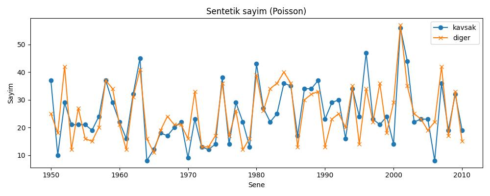
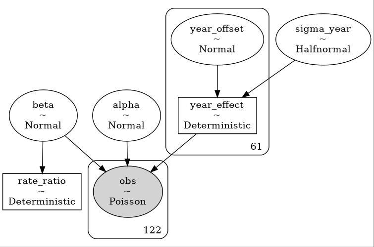
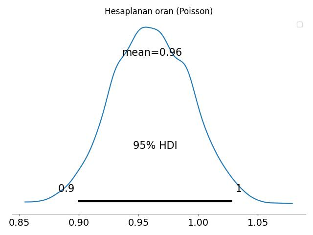
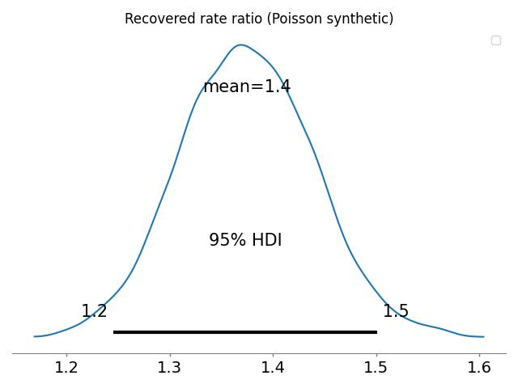

Daha önce istatistik testler konusunda gördük, bir dağılım varlığlığını test için o dağılımın analitik yoğunluk fonksiyonunu veriden gelen tahmin ediciler üzerinden tanımlayıp, veriyi bu fonksiyon ile üretmeyi deneyebiliriz, ve bu sonuç ile veri arasında uyumluluğa bakabiliriz.
Mesela olayların coğrafi olarak dağılımına bakalım.. Bu tür olayları nasıl modelleriz? Olaylar depremler, yangınlar, ya da bir savaşta bir alana atılan bombalar olabilir, ve bu tür sayılar Poisson dağılımı ile modellenir. Bu dağılım ilk bölümde gördüğümüz gibi,
\[ f(x) = P(X=x) = e^{-\lambda}\frac{\lambda^{x}}{x!} \]
olay sayısı \(x=1\), \(x=2\), vs.. olacak şekilde, ki önceden tanımlı belli bir zaman aralığında \(x\) tane olayın olma olasılığını bu yoğunluk veriyor. Coğrafi olay sayılarını ölçmek için biraz farklı düşünmek gerekiyor, mesela 2’inci Dünya Savaşı sırasında Almanların Londra’ya attıkları bombaları düşünelim, analizi [2]’de var; Merak edilen şuydu, acaba bombalar belli bir yerde kümeleniyor muydu (clustering)? Cevap önemli olabilirdi, belki özel bir yer vurulmak isteniyordu? Analizde olayların doğal oluş sayısını modelleyen Poisson varlığı ispatlanırsa, kümelenme hipotezi reddedilmiş olacaktı. İstatistikçi Clarke Londra’yı 536 tane ızgaraya böldü, ve her öğe içine düşen bombaları saydı. Bu bittikten sonra 1 tane bomba, 2 tane bomba, vs.. şeklinde olan hücrelerin sayısını aldı, ki yoğunluğa \(x\) ile geçilecek olan bu sayıydı.
Sonra Clarke yoğunluğu \(\lambda\) tahmin edici hücre sayısı bölü bomba sayısı üzerinden tanımladı, ve bu yoğunluktan tüm sayılar için bir tahmini bomba sayısı ürettirdi, sonuçları gerçek bomba sayıları ile karşılaştırdı.
N = 576.
lam = 537/N
d = N*np.exp(-lam)
probs = [d*1, d*lam, d*lam**2/2, d*(lam**3)/(3*2), d*(lam**4)/(4*3*2)]
list(map(lambda x: np.round(x,2), probs))Out[1]: [226.74, 211.39, 98.54, 30.62, 7.14]Gerçek sayılar 229, 211, 93, 35, 7, .. idi, görüldüğü gibi oldukca yakın sayılar. Bir adım daha atılıp bunun üzerinde bir istatistik testi uygulanınca Poisson varlığı, ve dolaylı olarak kümelemenin olmadığı ispatlanmış oldu.
Üstteki örnekte tek bir Poisson dağılımı modellendi. Peki ya zamana yayılmış (sene bazında), ve bir A grubu ile bir diğer B grubunun sayım verisini karşılaştırmak isteseydik? Problem şu şekilde ortaya çıkabilir,
Ülke bazında spesifik bir olaya bağlı bir sayım verisine bakıyoruz, bu veri sene bazında toplanıyor. Bir veri mesela yıllık “dört yol kavşaklarında olan kaza sayısı” olabilir. Kavşaklar tabii ki ülkenin her tarafında, hepsine bakıp her sene için orada olan kazaları topluyoruz. Sonra diyelim ki bu kazaların normal (!) kazalardan daha yüksek / farklı olup olmadığını merak ediyoruz, o zaman diğer bir ölçüm sene bazlı dört yol kavşakları dışındaki kazalar olur.
O zaman elimizde iki zaman serisi olacak, her sene için iki tane ölçüm. Her ölçüm rakamının, bir sayım olduğu için, Poisson dağılımınden geldiğini kabul edebiliriz. Fakat dikkat, her sene aynı Poisson dağılımından mı geliyor? Büyük ihtimalle hayır çünkü kaza sayılarında sene bazlı değişim olabilir: araç sayıları farklı olabilir, yol şartları değişmiş olabilir.
Bir diger problem, ayni senedeki iki olcum karsilastirirken bile, bir olcekleme (scaling) problemi olabilir.
import pandas as pd
import pymc as pm
import arviz as az
import data
years = np.arange(1950, 2011)
sim = data.generate_synthetic(years=years,
alpha_log=3.2,
beta_log=0,
sigma_year=0.4,
obs_model="poisson",
trend=data.slow_trend)
df = pd.DataFrame({
"year": sim["years"],
"near": sim["near"],
"far": sim["far"]
})
SEED = 333
np.random.seed(SEED)
# quick plot of generated counts
plt.figure(figsize=(10,4))
plt.plot(df.year, df.near, label="kavsak", marker="o")
plt.plot(df.year, df.far, label="diger", marker="x")
plt.xlabel("Sene"); plt.ylabel("Sayim")
plt.title("Sentetik sayim (Poisson)")
plt.legend()
plt.tight_layout()
plt.savefig('stat_082_rapoi_01.jpg')
def fit_poisson_ratio(years, near_arr, far_arr, fout):
n_years = len(years)
with pm.Model() as model_synth:
sigma_year = pm.HalfNormal("sigma_year", sigma=1.0)
year_offset = pm.Normal("year_offset", 0.0, 1.0, shape=n_years)
year_effect = pm.Deterministic("year_effect", year_offset * sigma_year)
alpha = pm.Normal("alpha", 0.0, 2.0)
beta = pm.Normal("beta", 0.0, 1.0)
log_mu = alpha + beta * group_pois + year_effect[year_idx_pois]
mu = pm.math.exp(log_mu)
obs = pm.Poisson("obs", mu=mu, observed=counts_pois)
rate_ratio = pm.Deterministic("rate_ratio", pm.math.exp(beta))
idata = pm.sample(1000, tune=1000, target_accept=0.9, return_inferencedata=True, random_seed=SEED)
graphviz = pm.model_to_graphviz(model_synth)
graphviz.graph_attr.update(dpi="100")
graphviz.render(fout, format="jpg")
print(az.summary(idata, var_names=["alpha", "beta", "sigma_year", "rate_ratio"], round_to=3))
rr_samples = idata.posterior["rate_ratio"].values.flatten()
p_gt_1 = (rr_samples > 1.0).mean()
print(f"\nP(rate_ratio > 1) = {p_gt_1:.3f}")
return idata
def build_stacked_arrays(simdict):
years = np.array(simdict["years"])
near = np.array(simdict["near"])
far = np.array(simdict["far"])
n_years = len(years)
counts = np.concatenate([near, far])
group = np.concatenate([np.ones(n_years, dtype=int), np.zeros(n_years, dtype=int)])
year_idx = np.concatenate([np.arange(n_years), np.arange(n_years)])
return years, counts, group, year_idx, near, far
years, counts_pois, group_pois, year_idx_pois, near_arr, far_arr = build_stacked_arrays(sim)
idata = fit_poisson_ratio(years, near_arr, far_arr, "stat_082_rapoi_03") Step Grad Sampli…
Progre… Draws Diverg… size evals Speed Elapsed Remaini…
2000 0 0.294 15 608.92 0:00:03 0:00:00
draws/s
2000 0 0.311 15 566.95 0:00:03 0:00:00
draws/s
2000 0 0.319 15 615.70 0:00:03 0:00:00
draws/s
2000 0 0.294 15 585.16 0:00:03 0:00:00
draws/s
mean sd hdi_3% hdi_97% ... mcse_sd ess_bulk ess_tail r_hat
alpha 3.162 0.054 3.060 3.264 ... 0.001 1063.983 1799.608 1.001
beta -0.008 0.036 -0.078 0.056 ... 0.001 8788.097 2684.766 1.006
sigma_year 0.365 0.040 0.299 0.448 ... 0.001 1283.107 1917.308 1.003
rate_ratio 0.993 0.036 0.925 1.058 ... 0.001 8788.097 2684.766 1.006
[4 rows x 9 columns]
P(rate_ratio > 1) = 0.419
# Plot posterior of rate ratio
rr_samples = idata.posterior["rate_ratio"].values.flatten()
plt.figure(figsize=(6,3))
az.plot_posterior(rr_samples, hdi_prob=0.95)
plt.axvline(np.exp(sim["beta_log"]), color="red", linestyle="--", label="true ratio")
plt.title("Recovered rate ratio (Poisson synthetic)")
plt.legend()
plt.tight_layout()
plt.savefig('stat_082_rapoi_02.jpg')
np.random.seed(42)
years = np.arange(1980, 2020)
T = len(years)
u_t = np.random.normal(0, 0.4, size=T)
alpha = 3.0
beta_true = np.log(1.3) # 30% higher near rate
mu_far = np.exp(alpha + u_t)
mu_near = np.exp(alpha + beta_true + u_t)
far = np.random.poisson(mu_far)
near = np.random.poisson(mu_near)
sim = {"years": years, "near": near, "far": far}
years, counts_pois, group_pois, year_idx_pois, near_arr, far_arr = build_stacked_arrays(sim)
idata = fit_poisson_ratio(years, near_arr, far_arr, "stat_082_rapoi_03") Step Grad Sampli…
Progre… Draws Diverg… size evals Speed Elapsed Remaini…
2000 0 0.346 7 628.98 0:00:03 0:00:00
draws/s
2000 0 0.305 15 669.16 0:00:02 0:00:00
draws/s
2000 0 0.314 15 687.65 0:00:02 0:00:00
draws/s
2000 0 0.278 15 634.85 0:00:03 0:00:00
draws/s
mean sd hdi_3% hdi_97% ... mcse_sd ess_bulk ess_tail r_hat
alpha 2.879 0.073 2.736 3.011 ... 0.001 1030.075 1813.990 1.002
beta 0.317 0.047 0.229 0.408 ... 0.001 8153.224 2749.679 1.000
sigma_year 0.379 0.053 0.277 0.474 ... 0.001 1173.341 1764.667 1.003
rate_ratio 1.375 0.065 1.258 1.503 ... 0.001 8153.224 2749.679 1.000
[4 rows x 9 columns]
P(rate_ratio > 1) = 1.000rr_samples = idata.posterior["rate_ratio"].values.flatten()
plt.figure(figsize=(6,3))
az.plot_posterior(rr_samples, hdi_prob=0.95)
plt.title("Recovered rate ratio (Poisson synthetic)")
plt.legend()
plt.tight_layout()
plt.savefig('stat_082_rapoi_04.jpg')
[devam edecek]
Kaynaklar
[1] Bayramli, Istatistik, Sayım, Poisson ve Negatif Binom Bazlı Genel Lineer Modelleri (GLM)
[2] Clarke, An application of the Poisson distribution, https://www.actuaries.org.uk/system/files/documents/pdf/0481.pdf